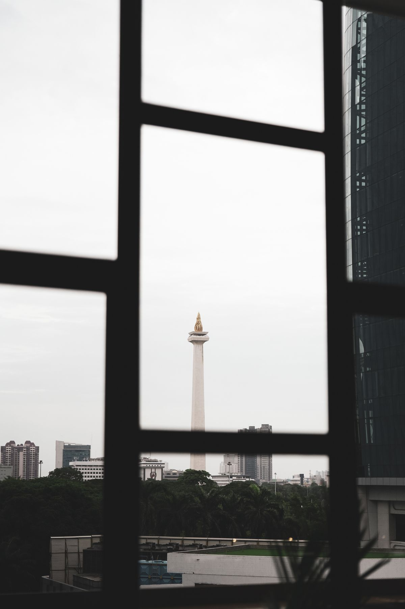
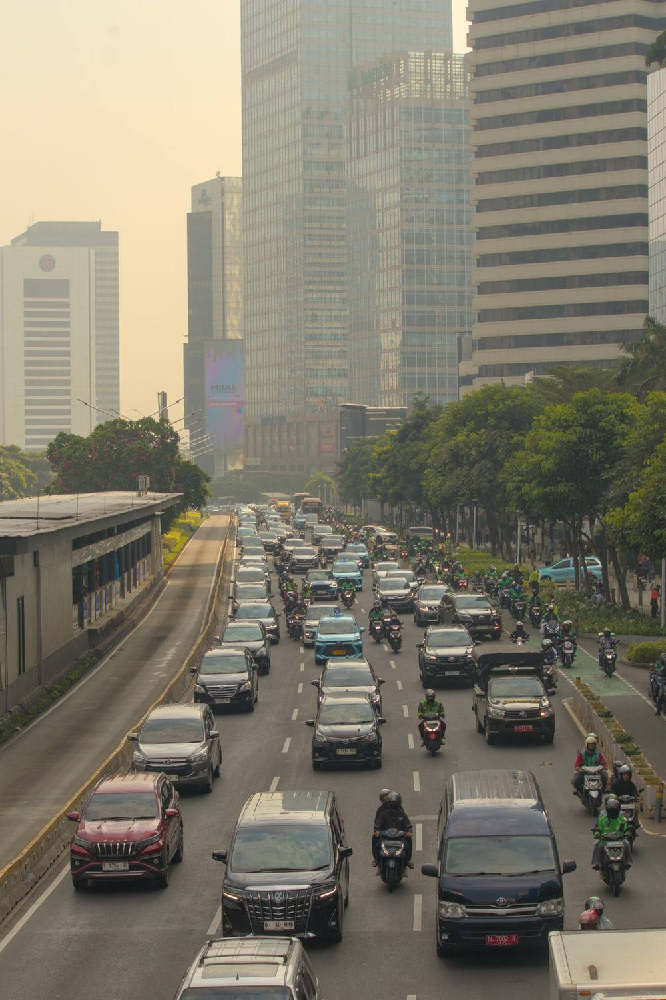

Hari ini, Rabu 28 Oktober 2026, kawasan Bundaran Hotel Indonesia (HI) di Jakarta Pusat jadi pusat perhatian. Badan Eksekutif Mahasiswa Universitas Indonesia (BEM UI) bersama Komite Selamatkan Daulat Rakyat (SADAR) menggelar aksi bertajuk #IndonesiaSadar, tepat di Hari Sumpah Pemuda. Kalau kamu berencana lewat Jakarta Pusat hari ini, baca dulu sampai habis. Ada daftar lima tuntutan yang dibawa massa, kawasan yang rawan macet, dan jalur alternatif yang bisa kamu pakai supaya perjalananmu tetap lancar. Semua info di artikel ini berlaku per Oktober 2026.
Kenapa Demo Ini Ramai Dibicarakan
Aksi hari ini bukan yang pertama. Pada Selasa 20 Oktober 2026, BEM UI dan Komite SADAR sudah menggelar aksi di kawasan Tugu Tani, Jakarta Pusat, dengan isu yang sama: kebakaran hutan dan lahan, ketimpangan ekonomi, korupsi, mahalnya pendidikan, dan penyempitan ruang sipil. Hari ini mereka kembali turun, dan memilih momentum Hari Sumpah Pemuda untuk menyampaikan tuntutan kepada pemerintah.
Pesertanya tidak hanya mahasiswa UI. Menurut pemberitaan, aksi ini juga diikuti mahasiswa dari berbagai perguruan tinggi di Semarang, Malang, Yogyakarta, dan Bandung, serta mengundang buruh, petani, dan elemen masyarakat lainnya. Kepala Departemen Kajian Strategis BEM UI, Namoradiarta Siahaan, menyebut aksi ini sebagai ruang bersama bagi masyarakat untuk menyampaikan aspirasi.
Satu hal yang perlu kamu tahu: jam mulai aksi yang beredar di media berbeda-beda. Ada media yang menulis pukul 10.00 WIB, ada juga yang menulis pukul 14.00 WIB. Jadi jangan jadikan satu jam sebagai patokan. Pantau informasi terbaru dari TMC Polda Metro Jaya dan aplikasi navigasi sebelum kamu berangkat, karena pengalihan arus diberlakukan situasional sesuai kondisi di lapangan.

5 Tuntutan BEM UI dalam Aksi #IndonesiaSadar
Massa membawa lima kelompok tuntutan yang menyasar kebijakan pemerintah. Berikut ringkasannya, berdasarkan pemberitaan menjelang aksi:
- Lingkungan dan bencana ekologis. BEM UI dan Komite SADAR mendesak pemerintah menetapkan kebakaran hutan dan lahan serta bencana di Nusa Tenggara Timur, Papua, Sumatra, dan wilayah lainnya sebagai bencana nasional. Mereka juga menuntut penegakan hukum terhadap perusahaan yang terbukti bertanggung jawab dan pemulihan ekosistem yang terdampak.
- Ekonomi dan anggaran negara. Massa mendesak pemerintah mengutamakan kepentingan masyarakat dalam penggunaan anggaran. Program Makan Bergizi Gratis (MBG) dan Koperasi Desa Merah Putih (KDMP) ikut disorot dan dinilai perlu dievaluasi dari sisi prioritas belanja negara.
- Pendidikan dan lapangan kerja. Tuntutan ketiga meminta pemerintah menurunkan biaya pendidikan dan memperluas akses terhadap layanan dasar. Di sisi lain, penciptaan lapangan kerja berkualitas juga dituntut supaya masyarakat punya penghasilan yang layak.
- Reformasi hukum dan pemberantasan KKN. BEM UI dan Komite SADAR menuntut pemberantasan korupsi, kolusi, dan nepotisme. Mereka menyoroti sejumlah regulasi, termasuk Undang-Undang TNI, Kitab Undang-Undang Hukum Pidana (KUHP), dan Undang-Undang Pengembangan dan Penguatan Sektor Keuangan (P2SK).
- HAM dan demokrasi. Tuntutan kelima mendesak perlindungan kebebasan berpendapat serta menyoroti dugaan kriminalisasi dan militerisasi di ruang sipil. Massa meminta ruang sipil yang aman untuk menyampaikan kritik terhadap kebijakan publik.
Karena artikel ini ditulis dari pemberitaan menjelang aksi, belum ada kabar apakah seluruh tuntutan akan mendapat tanggapan langsung dari pemerintah pada hari yang sama. Pantau kabar lanjutan dari sumber resmi dan media tepercaya.
Jalur Alternatif Buat Kamu yang Harus Lewat Jakarta Pusat
Selain Bundaran HI, kawasan yang berpotensi padat meliputi Jalan MH Thamrin, Jalan Jenderal Sudirman, kawasan Monas, Tugu Tani, serta sekitar Gedung DPR/MPR RI. Direktorat Lalu Lintas Polda Metro Jaya menyiapkan rekayasa arus kendaraan sesuai kondisi lapangan, dan TMC Polda Metro Jaya mengimbau masyarakat menghindari kawasan terdampak bila memungkinkan.
Kalau kamu tetap harus melintas, ini jalur alternatif yang disarankan berdasarkan informasi TMC Polda Metro Jaya:
- Dari arah selatan, termasuk Blok M, Senayan, dan Semanggi: pertimbangkan jalur melalui Karet Tengsin dan Jalan KH Mas Mansyur untuk menghindari Bundaran HI. Jalan Galunggung menuju Manggarai juga bisa jadi pilihan sesuai tujuanmu.
- Dari kawasan Tanah Abang yang menuju pusat Jakarta: Jalan KH Mas Mansyur atau Jalan Fachrudin bisa dipertimbangkan.
- Menuju Menteng atau Cikini: periksa kondisi jalan di sekitar Kebon Sirih sebelum menentukan rute lanjutan.
- Dari Harmoni atau Monas yang hendak menuju kawasan Sudirman: perhatikan kepadatan Jalan MH Thamrin. Jalur melalui Jalan Kebon Sirih menuju Tanah Abang atau Tugu Tani bisa dipertimbangkan, dengan tetap memperhatikan kemungkinan dampak demonstrasi di kawasan tersebut.
- Dari kawasan Menteng menuju Bundaran HI: pertimbangkan Jalan Pamekasan atau Jalan Sumenep menuju Jalan HR Rasuna Said. Jalan Teuku Umar juga menjadi pilihan untuk perjalanan di sekitar Menteng, bergantung pada kondisi lalu lintas.
Pengguna kendaraan pribadi disarankan memeriksa informasi lalu lintas melalui aplikasi navigasi dan memantau pembaruan dari TMC Polda Metro Jaya sebelum berangkat. Masyarakat yang hendak menuju kawasan Bundaran HI juga bisa mempertimbangkan MRT Jakarta untuk mengurangi ketergantungan pada kendaraan pribadi, dengan tetap memeriksa informasi operasional dan akses stasiun bila situasi di sekitar lokasi berubah.

Tips Biar Perjalananmu Tetap Lancar Hari Ini
Pertama, berangkat lebih awal dari biasanya supaya kamu punya waktu cadangan bila terjebak antrean. Kedua, siapkan rute cadangan sebelum berangkat, jangan hanya mengandalkan satu rute yang biasa kamu pakai. Ketiga, ikuti arahan petugas di lapangan dan kurangi kecepatan saat mendekati persimpangan. Keempat, pantau pembaruan lalu lintas dari TMC Polda Metro Jaya dan aplikasi navigasi selama perjalanan. Kelima, bila tujuanmu dekat dengan stasiun MRT atau halte TransJakarta, pertimbangkan naik transportasi umum hari ini.
Demo adalah bagian dari kehidupan demokrasi, dan Hari Sumpah Pemuda adalah momentum yang pas untuk mengingat peran generasi muda dalam mengawal kehidupan berbangsa. Apa pun pandanganmu soal tuntutannya, yang paling penting hari ini adalah kamu sampai tujuan dengan selamat dan tepat waktu. Bagikan artikel ini ke temanmu yang hari ini harus lewat Jakarta Pusat, supaya mereka juga tidak kaget di jalan.
← Kembali ke Other